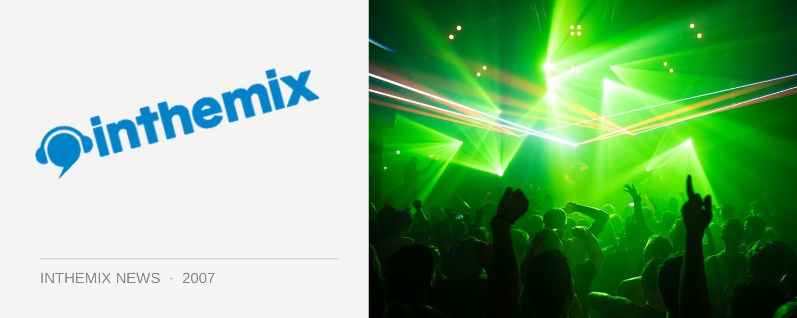

Playground Weekender lineup finally revealed!
We might have been kept waiting, but the frantic forum discussions and rush to book cabins and accommodation well before a single act had been announced should be the perfect reflection of the enthusiasm for the Playground Weekender festival, which will be returning to Wisemans Ferry over three days from the 7th of March next year. Check below for the full lineup of acts that you’ll be listening to!
At the top of the bill for electronic music lovers is none other than Austria’s Kruder & Dorfmeister, the downtempo masters who are best known for their dubby remixes for Madonna, Roni Size and Depeche Mode ,many of which are collected on their seminal The K & D Sessions double album. Their awe-inspiring live show spans over four hours and travels on a journey through dub, hip hop and house and in addition to the duo behind the musical controls, the performance also features several MCs and VJs.
And in spite of the band’s declarations that their tour at the beginning of this year would be their last for quite a while, the Playground Weekender organisers have pulled off a coup in getting Crazy Penis back to the country for the event – they’ll be debuting new material from the brand new album that’s coming up.
And that’s not to mention one of the most solid and diverse lineups of electronic acts that we’ve ever seen at a Sydney festival: the legendary ‘Good Times’ purveyor Norman Jay, influential tech/electro duo Tiefschwarz who we haven’t welcomed back into the country for over a year and a half, Buzzin’ Fly label head Ben Watt, German techno wonder Steve Bug, drum n’ n bass mainstay LTJ Bukem, as well as an eclectic selection of house names like Tom Middleton, Ralph Lawson, Spirit Catcher and more.
Add to this a comprehensive lineup of local acts and DJs as well as a selection of international rock acts like Ian Brown, Maximo Park, The Wombats and more, then you’ve got it made. Located less than two hours from Sydney in the Del Rio Resort at Wiseman’s Ferry, the festival is smack bang in the middle of a stunning location and is spread over three cruisy days, allowing you to take their time to relax and explore everything on offer. It was perfectly summed up in the ITM review last year with the statement that, “Playground Weekender was everything a festival should be. I can honestly say that this was one of the best weekends of music I’ve had for a very long time. It was a privilege to be present… And I hope to be back at Wiseman’s Ferry in years to come.”
Playground Weekender tickets are on sale now! And stay tuned as there are more acts to be announced as the weekend draws closer, in the meantime peek below for the lineup…
Kruder and Dorfmeister Experience
Ian Brown
Maximo Park
Ben Lee
Crazy Penis
Josh Pyke
Tiefschwarz
The Wombats
Norman Jay
LTJ Bukem
Ben Watt
Kora
Dappled Cities Fly
Tom Middleton
Steve Bug
Mo Horizons
Kid Kenobi
Ralph Lawson
Spirit Catcher
South Rakkas Crew
Poxy Music
The Holidays
Dardanelles
Blue Juice
Stick Figures
Theatre Of Disco